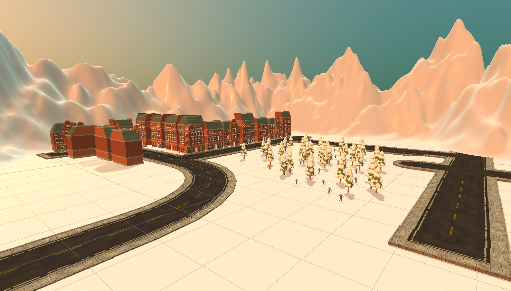
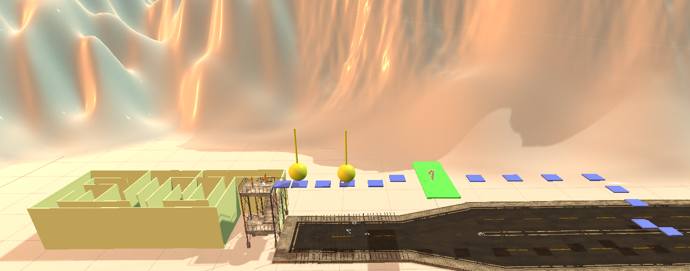
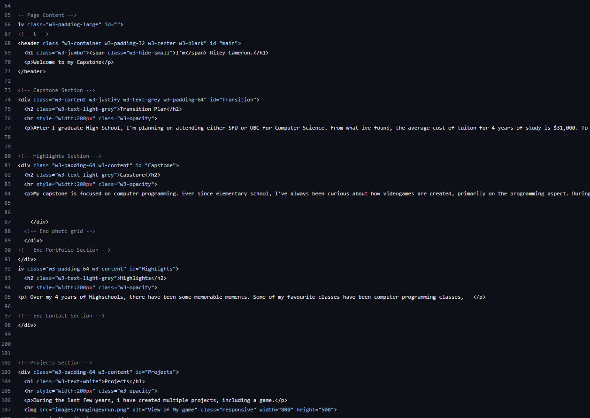
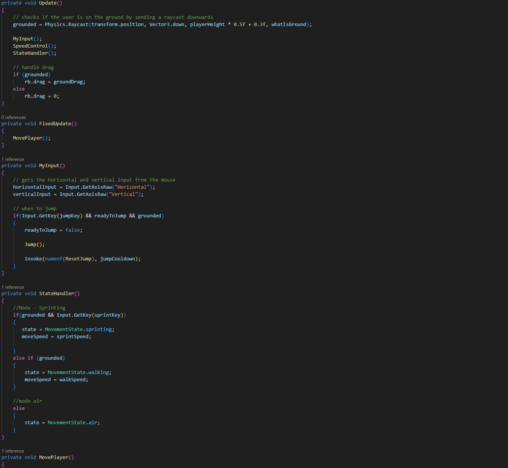
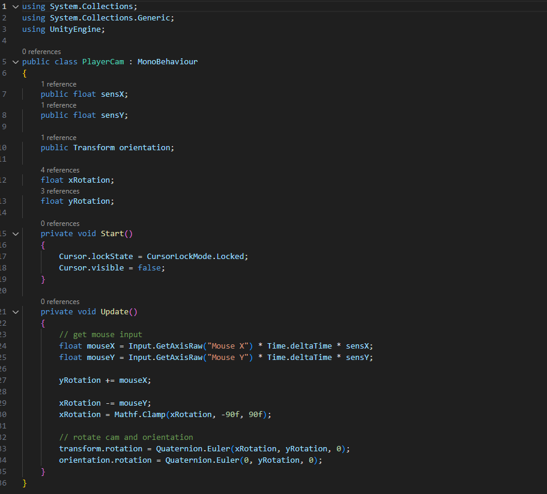

Welcome to my Capstone
After I graduate High School, I'm planning on attending either SFU or UBC for Computer Science. From what ive found online, the average cost of tuiton for 4 years of study is $31,000. To be able to pay for these tuition costs, i have a plan in place. Fortunately for me, my parents have been putting some money away for me to use for my university tuition, but this isnt going to cover the full amount, so i am going to be working part time to be able to pay the rest of the tuition costs. Due to SFU and UBC being in close enough proximity to where i live, I am lucky enough i wont have to pay for housing fees to live at the university, but instead of that, i will need to drive and pay for the gas in my car to travel to and from the university. After i graduate with a Bachelors Degree, im planning on going into software engineering as a career.
My capstone is focused on computer programming. Ever since elementary school, I've always been curious about how videogames are created, primarily in the programming aspect. During elementary school, I used a program called Scratch, it was a block code program which was a good starting place and taught me some of the beggining steps behind programming. Then in middle school, we were taught how to code and operate a robot named "Sphero", we could then program its movement and make it do certain tasks like roll for X number of seconds then stop and turn 90 degrees. Finally in High School, I was able to take dedicated Computer Programming courses. In grade 10, I learned how to code in Python and C-Sharp, i used this coding knowledge in an attempt to make and code a robot using Circuit Python and microcontrollers, it was able to move around and play a R2D2 sound, but i ran out of time before i was able to finish anything else. Then the next year in grade 11, I took a course dedicated to the creation of my own game, 3D game design. Which in this class you were to code a custom game using coding blocks. In this game, there is a Main Menu screen, which i custom made. There are also certain items you are supposed to collect while traversing through an obstacle course. In addition to the obstacle course, there is a health system in the game, so if you fall, you take damage and can possibly die. To do this, i had to make a background screen using an image which appears when the user first presses play. For the Health system, i made a trigger point, so if the trigger detected that a player had touched the wires that were laying on the ground below the obstacle course, it would deduct a certain amount of health from the players total health. During this class, i used the program Unity and Blender to create my game. Also during grade 11, During IDS my project was to create a character controller for a game using solely C#. Then this year in grade 12, I have joined the robotics club and coding club here at centennial.
Over my 4 years of Highschools, there have been some memorable moments. In grade 9, we had the quarter system, having 3 hour long days was pretty enjoyable, having way to much free time was probably the most memorable moment from Grade 9. In grade 10, this is where I took my first Computer Programming class, which was probably the most fun ive had in a single class for a long time, i was able to create and code projects, and it was an easy class aswell which was nice. In grade 11, I took a course focused on Game Design. This class was memorable because after i was finished the class, i was left with a game that looked half decent. This class had both design elements, where we created our own character for the game using Blender. This course also had a programming aspect, where we coded with blocks and C# in unity.
During the last few years, i have created multiple projects, including a game and this website.
Here is the city in my game, I created this project using mainly block code inside of Unity. Some smaller parts were coded in C#, which extended my learning throught that project and allowed me to add more to my game.
I have also coded this very website using HTML. Although it is a pretty basic website, through the creation of this website I have learned various new techniques regarding HTML, including some new functions like id="", and
for paragraphs
. I also researched ways to allow me to have images width that are shown in the website change, correlating to the actual device that it is being shown on, so if you are viewing this website on a phone, the dimensions of the image will be different from if you view this website on a bigger screen. Another thing i learned while making this website, is how much CSS and HTML go hand in hand when making a website, for instance the buttons on the side of the screen, those are possible with CSS. Without CSS on a website, the website would lack style. This is the code for my Character controller that i made during IDS. It features multiple functions inside the code, like the MyInput function, where it gets the raw horizontal and vertical input from the game, and has an if statement to check if the space bar was pressed, and if it was pressed to initate a jump.
My Character controller also featured a First person camera view. This script allows the player to customize their sensitivity using float variables. The script also locks the players mouse to the screen, and disables its visibility. The main part of this Script, is where the script gets the raw mouse input and sets a limit on ho far ur camera can move 90 degrees each on the x axis.
